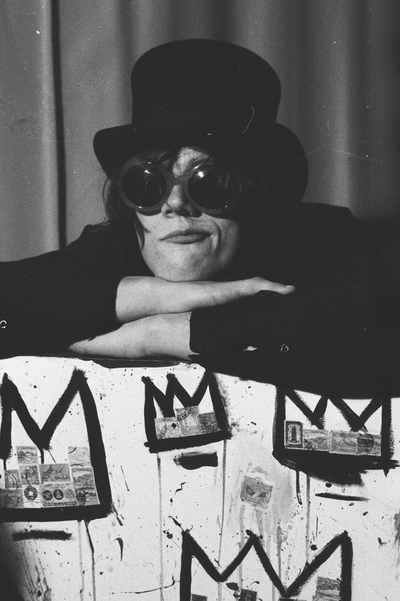

Move across the screen
Bio
Scored in real time.
A composer, producer, and multi-instrumentalist whose music rises from chaos, beauty, and survival.
From early days behind the drums and piano to years performing professionally, his life has always been scored in real time. After a devastating accident left him paralyzed, he rebuilt himself through mixing, mastering, and producing, crafting music for others while refining his own cinematic voice. He now writes and produces for a sync-driven production group and continues to mix, master, and produce independent artists throughout the year.
Read the full story
David Asher is a multi-instrumentalist, composer, and producer whose journey through life has been anything but ordinary. Marked by chaos, beauty, and moments of darkness, his music is born from the fires of harsh realities and deep personal struggles.
Enamored with the piano at a very early age, David discovered early on the harmonious beauty of the white keys, a revelation that set him on a path that would define his life. By 11, David had picked up the guitar, and soon after, the drums, excelling in percussion to the point of becoming a state and county champion. As a sophomore in high school, he performed timpani with The Trenton State Orchestra. David's accolades during these formative years were numerous, from drum captain to chamber orchestra conductor, and lead singer and guitarist in a rock band.
After high school, David's musical career flourished as he played with various groups, including the progressive rock band Sandy Gilmour and the renowned NY music collective STILTS. His move from NJ to NYC allowed him to live his dream as a working musician, eventually relocating to the Hamptons where he became a sought-after performer. He played from Montauk to Sunrise Highway, joining the legendary Long Island band Satchel Boogie and performing with some of the most talented musicians in the area.
For the next decade, David lived as a professional musician and songwriter until a tragic accident left him paralyzed from the waist down. Refusing to be discouraged, David reinvented himself as a mix engineer and producer, starting his own business. Yet, his passion for composing remained undiminished. Determined to pursue his love for film and TV scoring, David found a mentor in Robbie Teehan, a Canadian composer with a prolific career in media composition.
David's music is a testament to his life's experiences, infused with every ounce of joy and every gallon of pain. His masterful use of motifs, intricate layering, and breathtaking builds, combined with his exceptional production skills, make him an invaluable asset for any film score. David Asher transforms cinematic visions into unforgettable auditory experiences.
Cinematic reel
Listen.
- Loading tracks from SoundCloud…
Links
Beyond the score.
Records, bands, studios, and films. Everything else David makes, in one place.

Contact
Let's score it.
Film, TV, games, trailers, or sync. Tell me about the project and I'll get back to you.
Or email davidasher1122@gmail.com